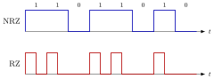
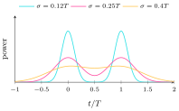

; a link is designed with a power budget ( losses + margin, in dB) and a rise-time budget (NRZ); Shannon caps any channel at .
; a link is designed with a power budget ( losses + margin, in dB) and a rise-time budget (NRZ); Shannon caps any channel at .Bit rate and pulse spreading (derivation)
For a Gaussian output pulse of rms width  , the FWHM is . Requiring adjacent RZ pulses, one bit slot apart, to be resolved with gives . NRZ uses the full slot for each bit: the same channel carries twice the bit rate. The bit-rate × distance product of a dispersion-limited link is constant because .
, the FWHM is . Requiring adjacent RZ pulses, one bit slot apart, to be resolved with gives . NRZ uses the full slot for each bit: the same channel carries twice the bit rate. The bit-rate × distance product of a dispersion-limited link is constant because .
- Step-index multimode: ; a uniform spread of delays has .
- Graded index (optimal profile): , a factor smaller.
- Chromatic: with the rms source width ().
Picture: RZ and NRZ, and why spreading closes the eye


Capacity limits
Nyquist: a channel of bandwidth  carries at most independent symbols per second. Shannon: with Gaussian noise . Example: 10 GHz with SNR 30 dB → Gb/s, reached only with multilevel coherent formats (QAM). Capacity is multiplied by time-division multiplexing (faster electronics), wavelength-division multiplexing (DWDM: 80+ channels at 50–100 GHz spacing in the C band, one EDFA amplifies them all), polarisation and space (multicore fibre).
carries at most independent symbols per second. Shannon: with Gaussian noise . Example: 10 GHz with SNR 30 dB → Gb/s, reached only with multilevel coherent formats (QAM). Capacity is multiplied by time-division multiplexing (faster electronics), wavelength-division multiplexing (DWDM: 80+ channels at 50–100 GHz spacing in the C band, one EDFA amplifies them all), polarisation and space (multicore fibre).
Worked examples
- Step vs graded index,
 , , 1 km: step ns, ns, Mb/s. Graded: ps (1000× less). With a 1310 nm laser, nm and ps/(nm km): ps; ps → Gb/s, Gb/s over 1 km.
, , 1 km: step ns, ns, Mb/s. Graded: ps (1000× less). With a 1310 nm laser, nm and ps/(nm km): ps; ps → Gb/s, Gb/s over 1 km. - Power budget at 1310 nm: transmitter 0 dBm, receiver sensitivity −28 dBm, two connectors 0.5 dB each, splices 0.1 dB every 2 km, fibre 0.35 dB/km, margin 3 dB: dB available, dB/km → km.
- Rise-time budget, 50 km at 1550 nm, ps/(nm km), nm: ps; transmitter 100 ps, receiver 150 ps: ps → Gb/s.
Regeneration and amplification
Losses are compensated by optical amplifiers (EDFA every 80–100 km, all channels at once) instead of electronic 3R regenerators (re-amplify, re-shape, re-time, one per channel). Amplifiers do not undo dispersion or noise: those are handled by dispersion management and coherent DSP (amplifiers).
Engineering applications
Designing datacenter links (multimode, VCSEL, 100 m), access networks (PON), metro and long-haul DWDM systems, submarine cables (amplified spans of 50–80 km over 10 000 km).
Exam-style exercise
An 850 nm LED ( nm) drives a graded-index fibre (, ) with ps/(nm km) at 850 nm. (a) and per km. (b) Maximum NRZ bit rate over 2 km. (c) What changes with a VCSEL ( nm)?
Solution
(a) ps/km; nm → ns/km. (b) Over 2 km ns (chromatic dominates) → ns Mb/s. (c) ps, ps, ps → Gb/s: the narrow source is what makes 10G datacenter links possible.
Pitfall
Use rms widths () when adding in quadrature and FWHM only with the matching 0.59 factor; mixing them overestimates the bit rate by 2.35×. State RZ or NRZ: they differ by a factor 2.